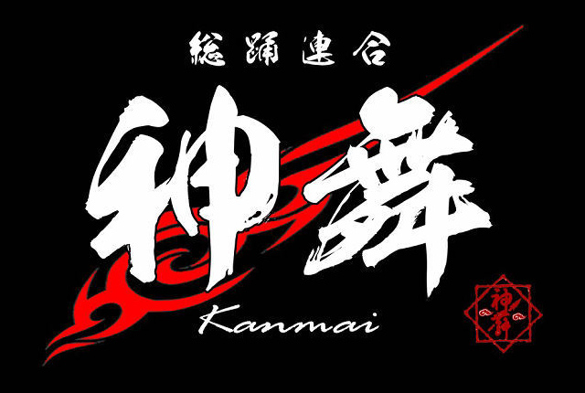
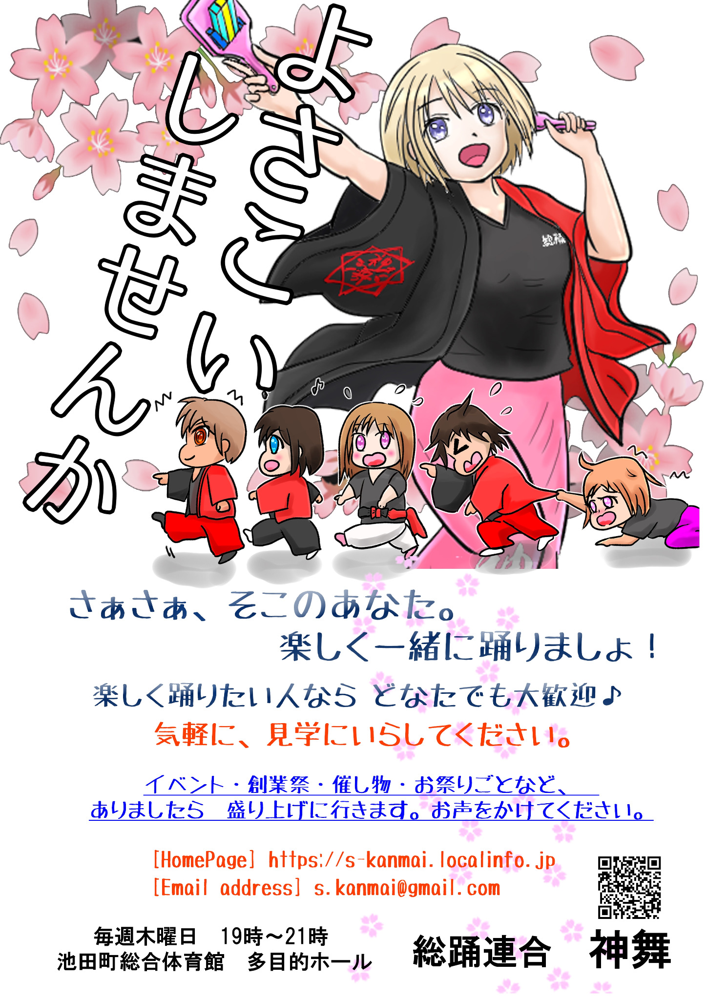

総踊り、笑顔で、つながる。KANMAI / ODORI TEAM

ENJOY THE DANCE, ENJOY THE MOMENT.✦ ✦ ✦
OUR TEAM
神舞の仲間たち。
集合写真写真を準備中です
ABOUT US肩の力を抜いて、
肩の力を抜いて、
楽しくいこう。
お祭りの音が聞こえたら、じっとしていられない。神舞は、みんなで一緒に踊る「総踊り」を楽しむチームです。
はじめての人も、お祭り好きも。みんなで笑って、踊って、盛り上がろう！
SUB TEAMサブチームロゴ神舞
EVENT SCHEDULE
これからの予定。
神舞の活動スケジュールSCHEDULE
次の予定は、決まり次第お知らせします。
新しい予定が入りましたら、ここに掲載します。
※ イベントの予定は変更になる場合があります。
MOVIE
YouTube。
PHOTO GALLERY
写真。
写真は、これからのお楽しみ。
イベントや練習の写真を順次掲載予定です。
JOIN US
メンバー募集。
踊りが好き。お祭りが好き。楽しむことが好き。
そんなあなたを、神舞は歓迎します！

記載HPは2026年12月26日をもって閉鎖募集画像内の旧ホームページURLについてのご案内です。
見学・参加についてのお問い合わせ
s.kanmai@gmail.com